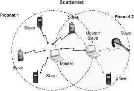

Conceitos Básicos do Bluetooth
Definição e Funcionamento
O Bluetooth é uma tecnologia de comunicação sem fio de curto alcance utilizada para conectar dispositivos eletrônicos e permitir a troca de dados sem a necessidade de cabos. Essa tecnologia é amplamente empregada em smartphones, computadores, fones de ouvido, caixas de som, teclados e diversos outros equipamentos eletrônicos.
A comunicação Bluetooth ocorre por meio de ondas de rádio que operam na faixa de frequência de 2,4 GHz. Diferentemente de redes que dependem de um equipamento central, a conexão Bluetooth acontece diretamente entre os dispositivos participantes.
Para que a comunicação seja estabelecida, é necessário realizar o processo de pareamento, no qual os aparelhos trocam informações de identificação e autenticação para criar uma conexão segura. Após esse processo, os dispositivos podem se conectar automaticamente sempre que estiverem dentro do alcance permitido.
Topologia de Rede (Piconet e Scatternet)
O Bluetooth organiza os dispositivos conectados em uma estrutura de rede chamada Piconet, formada por um dispositivo mestre (master) e até sete dispositivos escravos (slaves) ativos. O dispositivo mestre é responsável por controlar a comunicação e sincronizar a troca de dados dentro da rede.
Quando múltiplas piconets se interligam, forma-se uma Scatternet.

Ilustração da estrutura de nós formando uma Piconet e sua evolução para uma Scatternet.
FHSS (Frequency Hopping Spread Spectrum)
Uma das principais características do Bluetooth é a utilização da técnica chamada Frequency Hopping Spread Spectrum (FHSS), ou espalhamento espectral por salto de frequência. Nesse método, a transmissão muda constantemente de canal, reduzindo problemas de interferência causados por outros dispositivos que utilizam a mesma faixa de frequência, como redes Wi-Fi.
Segundo a especificação da tecnologia, o Bluetooth pode realizar até 1600 saltos de frequência por segundo. Além disso, também possui mecanismos de segurança, como autenticação dos dispositivos e criptografia de dados, garantindo maior proteção durante a comunicação.
← Voltar para o Menu